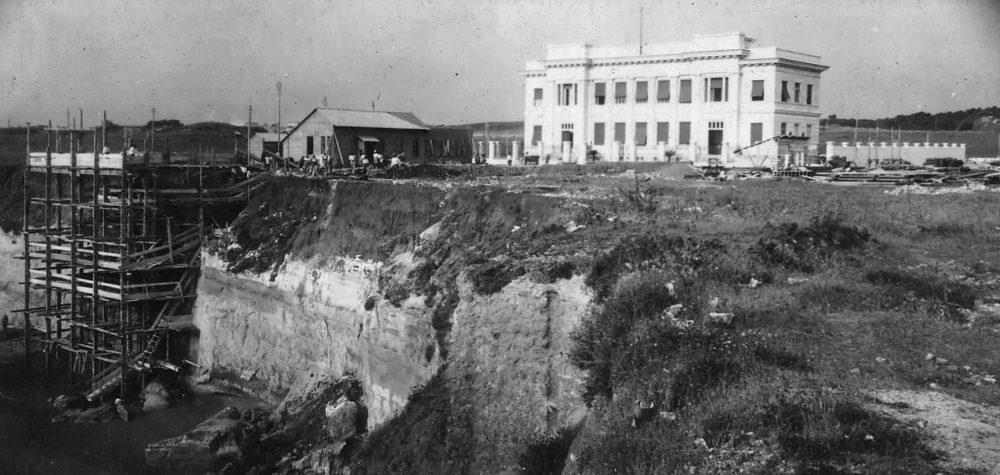

Le radici latine di Anzio, mille anni prima dei Volsci
Dall'età del Bronzo alla prima età del Ferro: Cavallo Morto, Colle Rotondo e la necropoli dell'Italcable. Sotto la città dei Cesari c'è una città molto più antica.
«Altro che Volsci!»
Ugo Antonielli, lettera a Roberto Paribeni, 1925 (in Di Mario–Jaia 2009)
«Altro che Volsci!»
Nel 1925, ad Anzio, lungo la via Ardeatina si lavorava all'Italcable: si posava il cavo telegrafico sottomarino che per la prima volta univa l'Italia alle Americhe, e si alzavano gli impianti della stazione. Quell'edificio è oggi il Centro Difesa Elettronica, e la necropoli è praticamente lì sotto: dalla spiaggia, in sua corrispondenza, se ne coglie ancora il punto. Dal terreno cominciarono a uscire tombe. Tante, e antichissime. A dirigere lo scavo c'era Ugo Antonielli, direttore del Museo Preistorico di Roma, e quello che vedeva lo entusiasmò al punto da scrivere di getto al suo soprintendente, Roberto Paribeni:
«Chiarissimo Paribeni, altro che elmo di Coriolano! Se c'è un Santo Protettore degli scavi, io sono certamente e bene sotto la sua protezione… Altro che Volsci!»
Cosa aveva trovato, per esultare così? Tombe dei Latini. Sepolture della cosiddetta facies laziale, la cultura funeraria di quel popolo, vecchie di quasi tremila anni: X–IX secolo a.C. I Volsci, che la storia ricorda come padroni di Anzio, non erano ancora arrivati, e mancavano secoli a Coriolano. Anzio non nasce volsca, e nemmeno romana. Nasce latina. Antonielli, sotto le fondamenta di un palazzo del Novecento, ne aveva appena trovato la prova.

Centocinquantamila anni di presenza
A dire il vero qui l'uomo c'era da molto, molto prima. Scavando per l'allora campo sportivo comunale, il «Giuseppe Grisetti», la cui area è oggi all'interno dell'ospedale militare (Dipartimento Militare di Lungodegenza), è saltata fuori una pietra lavorata su due facce, un'amigdala, del tipo che fabbricava l'uomo di Neandertal: circa centocinquantamila anni fa. Ma una cosa è la presenza sparsa dei cacciatori; un'altra è la storia dei villaggi, delle necropoli, delle difese. Quella comincia nell'età del Bronzo, nelle campagne a nord-ovest di Anzio. Due nomi: Cavallo Morto e Colle Rotondo.
Cavallo Morto: il primo rogo funebre del Lazio
Nelle campagne tra Lavinio e Campo di Carne, nel 1980, è venuta alla luce una necropoli. L'anno dopo gli archeologi della Soprintendenza l'hanno scavata e hanno trovato una quarantina di urne piene di cenere. Risalgono al Bronzo Recente, tra il XIII e il XII secolo a.C., e accanto avevano piccoli oggetti di bronzo: fibule a forma di archetto di violino, rasoi a doppio taglio. Erano i morti del vicino abitato di Colle Rotondo, otto chilometri più a nord. E sono, finora, la più antica testimonianza in tutto il Lazio di un'usanza nuova: bruciare i morti invece di seppellirli.
Colle Rotondo, la seconda città fortificata del Lazio antico
Il pianoro di Colle Rotondo, in località Sant'Anastasio, è stato indagato a partire dal 2009 da tre università romane (Roma Tre, La Sapienza, Tor Vergata), in una serie di campagne di scavo. Quello che hanno trovato ha sorpreso tutti: un sistema di difese di terra rinforzato da un'armatura di legno, databile tra il Bronzo Finale e la prima età del Ferro. Il carbonio 14, fatto su tronchi di quercia bruciati, dà date tra il XIV e l'XI secolo a.C. L'area difesa misurava sette ettari e mezzo: nel Lazio antico, più grande di così c'era solo il Campidoglio, a Roma. Studi più recenti hanno mostrato che in epoca arcaica fu aggiunto un secondo muro di terra interno: due ettari affacciati sul mare dentro i sei protetti dal terrapieno più vecchio. Una doppia cinta concentrica, un'idea di città che qui nessuno si aspettava così presto.


All'alba del Ferro: le prime incinerazioni dell'Italcable
Torniamo alla necropoli dell'Italcable, quella che fece esultare Antonielli. Le tombe più antiche sono incinerazioni: le ceneri dentro vasi a forma di doppio cono, con corredi di vasetti d'argilla grezza fatti a mano, coltellini di bronzo, rasoi, fibule, ornamenti personali. È la stessa cultura funeraria della costa tirrenica, laziale e campana, e segna l'alba dell'età del Ferro: siamo nel X–IX secolo a.C., nei periodi più antichi della cultura laziale.
Tombe nello stesso posto, per molti secoli
Con l'età del Ferro l'usanza cambia: non si brucia più, si torna a seppellire il corpo intero, e i corredi si fanno più ricchi. Antonielli scavò in due tempi, nel maggio e nel settembre del 1925: una trentina di tombe a fossa e cinque a pozzetto. Poi, nel 1926, morì all'improvviso, prima di poter pubblicare. I corredi finirono al Museo Pigorini di Roma tutti insieme, senza più sapere quale oggetto venisse da quale tomba. Se oggi qualcosa di quel quadro si riesce ancora a ricostruire, è grazie ai suoi appunti scritti a mano e al lavoro paziente di Pär Göran Gierow, che li pubblicò nel 1966, quarant'anni dopo lo scavo.
La cosa che rende speciale questa necropoli è la durata. Le sepolture non si fermano quando arrivano i Volsci, nel V secolo, né quando arriva Roma, nel 338. Più che una continuità ininterrotta, è una successione di riprese e fasi, sullo stesso lembo di costa, fino in piena età romana.
Cronologia protostorica
| Datazione | Sito | Evidenza |
|---|---|---|
| ~150.000 anni fa | Campo sportivo Grisetti (oggi area dell'ospedale militare) | Amigdala acheuleana (Homo neanderthalensis) |
| XIII–XII sec. a.C. | Cavallo Morto | 40 urne cinerarie: prima cremazione del Lazio |
| 1315–1010 a.C. (C14) | Colle Rotondo | Aggere con armatura lignea di quercia (CEDAD) |
| X–IX sec. a.C. | Necropoli Italcable | Prime incinerazioni (Laziale I–II) |
| IX–VIII sec. a.C. | Pianoro di Santa Teresa | Prime opere del vallo urbano (ceramica laziale IIB–III, scavo Guaitoli 1980–81) |
| ~850–700 a.C. | Colle Rotondo / Santa Teresa | Aggere interno; strato laziale IIB–III |
| Dal IX sec. a.C. | Necropoli Italcable | Passaggio a inumazione; uso prolungato per riprese e fasi |
| ~500 a.C. | Tutto il territorio | Occupazione volsca di Antium |
Dove sono finiti i materiali
I corredi dell'Italcable sono al Museo Nazionale Preistorico Etnografico «Luigi Pigorini», dentro il Museo delle Civiltà a Roma. Il Museo Civico Archeologico di Anzio, a Villa Adele, espone una scelta di corredi protostorici locali del X–IX secolo a.C. I reperti di Colle Rotondo stanno per lo più nelle università che li hanno scavati.
La tomba della gens Mulakia
E presso il cimitero comunale, lungo la via Nettunense, si apre il sepolcreto a tre celle della gens Mulakia, la tomba della transizione a cavallo della conquista romana del 338 a.C.: né più del tutto volsca, né ancora del tutto romana. Ha una storia troppo grande per queste righe, e la raccontiamo nella scheda a lei dedicata.
La «strada dei marmi» e il veterano del Friuli
Mille anni dopo le prime urne, quella stessa fascia di costa era ancora un grande cimitero. Nell'ottobre del 1877, lavorando vicino alla chiesa di San Biagio presso Nettuno, si trovò un sepolcreto di età imperiale con due lapidi intere. Il cronista anziate Calcedonio Soffredini ne copiò una, «di bella incisione, dei migliori secoli dell'Impero»: ricordava L. Verazio Afro, arrivato fin qui da Forum Iulii, l'odierno Friuli. Veterano, decurione e questore di Antio, sepolto dai colleghi. Un ufficiale che aveva attraversato l'Italia per finire i suoi giorni in carica in una colonia di mare. Soffredini parla anche di una «strada dei marmi» tra Nettuno e Anzio, fiancheggiata da monumenti funebri: la stessa idea dei sepolcri allineati lungo le grandi strade in uscita da Roma, qui distesa lungo il mare.
Dall'amigdala al cavo: la stessa costa, fino a oggi
Quel cantiere dell'Italcable, che fece esultare Antonielli, non posava un cavo qualunque. Il 16 marzo 1925, da Anzio, una scintilla corse sotto l'oceano fino a New York, passando per le Azzorre; il 12 ottobre dello stesso anno la linea toccò Buenos Aires. Per la prima volta l'Italia parlava con le Americhe senza passare per altri. L'opera costò duecento milioni di lire, e metà di quel capitale lo misero gli emigrati italiani dell'America Latina: pagavano per poter sentire, finalmente, le famiglie rimaste a casa. La palazzina della stazione, quella che si riconosce in fondo alla vecchia fotografia, è oggi il Centro Difesa Elettronica. Sotto, la necropoli dei Latini; sopra, il primo filo diretto fra due continenti. La stessa striscia di terra, a tremila anni di distanza, è servita due volte a tenere unite persone lontane.